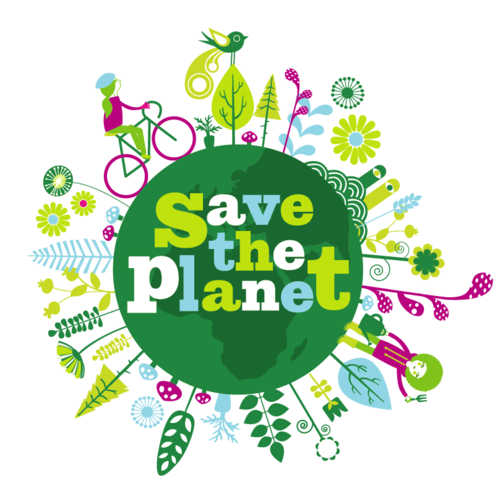
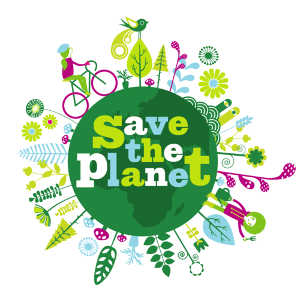

I love cycling! This is what I am going to tell you about the journey of mines to know how to cycle.
My Hooby is 🚲cycling🚲...When I was 7 years old my father and mother tought me to cycle.Then onwards every envening I went to cycle daily and slowly my skills developed. And now its my one of the hobbies too!Now I know very well that cycling is really good for health and as well as nature.This hobby can be developed by anyone however i got this naturally. Doing cycling will keep one always healthy and fresh too,and it is either a good way of contributing the nature to be clean as cycles don't use petrol neither release any king of gas.It also makes us feel happy and joyfull, with health.
I actually got Inspired to cycle for saving "🌍Mother Earth🌎".
 
